📌 Analiza slika
📌 Image embedding
- Options → Add-ons
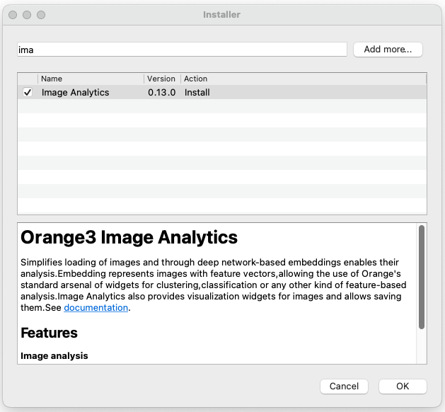
Nakon instalacije, možemo vidjeti dostupne widget-e.
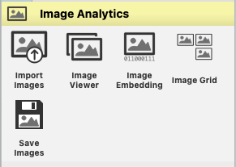
Učitavanje slika
Za učitavanje slika koristimo Import images.

Ako budemo dodavali nove slike u folder, treba kliknuti na Reload. Učitajmo slike 17 domaćih životinja:
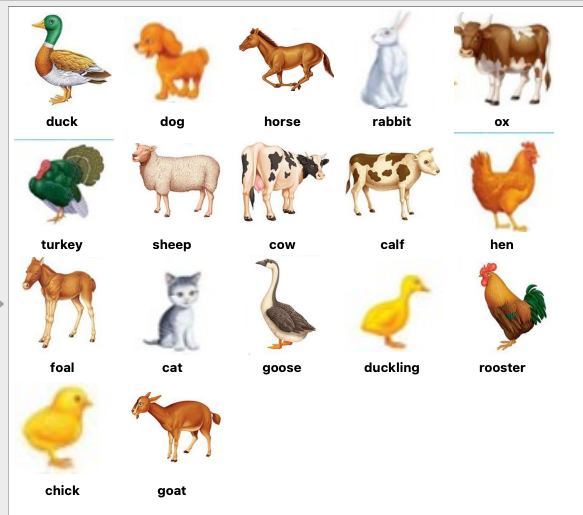
Kod učitavanja slika biramo folder kojeg želimo učitati:
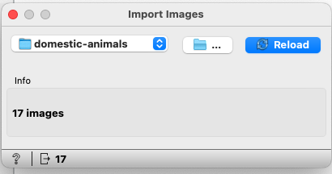
Slike možemo vidjeti pomoću Image Viewer, a pomoću Data Table možemo vidjeti osnovne informacije o slikama.
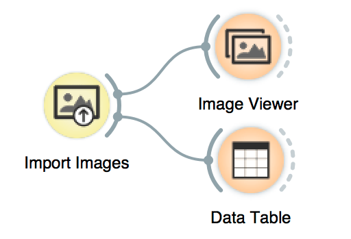
Image embedding je proces pretvaranja slike koja je zapravo niz piksela u numerički vektor. Taj vektor sadrži informacije o sadržaju slike na način koji je razumljiv modelima strojnog učenja.
Modeli strojnog učenja koji se temelje na neuronskim mrežama najbolje rade s numeričkim podacima.
U sljedećem koraku moramo pretvoriti slike u numerički zapis upotrebom modela dubokog učenja (eng. Deep learning). Možemo koristiti primjerice Inception V3 model koji generira vektor od 2048 dimenzija za svaku sliku. Takav način vektorizacije slike omogućuje modelima strojnog učenja grupiranje (eng. clustering) i klasifikaciju.
Inception V3 je konvolucijska neuronska mreža (Convolutional Neural Network, CNN) koja pripada vrsti Inception. Cijela obitelj CNN-ova pod nazivom Inception pripada Google-u, a koristi se za računalni vid. Modeli poput Inception V3 su zapravo velike neuronske mreže koje su prethodno uvježbane na ogromnim skupovima slika (npr. ImageNet).
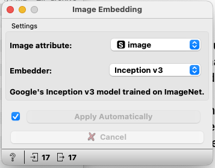
Kad provučemo sliku kroz takvu mrežu, na kraju dobijemo vektor koji predstavlja najvažnije značajke (eng. features) te slike.
Primjeri primjene:
- Pretraživanje sličnih slika u velikim bazama podataka
- Klasifikacija slika (npr. mačka, pas, ...)
- Generiranje sličnih slika
- Prepoznavanje objekata na slici (lica, prometni znakovi, ...)
Osim Inception V3, Orange ima na raspolaganju i nekoliko ostalih:

Widget šalje podatke na poslužitelj te računa vrijednosti.
Workflow u ovom koraku izgleda ovako:
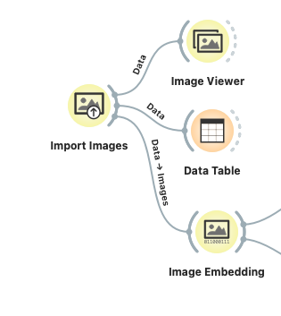
Pregled vrijednosti možemo vidjeti pomoću DataTable:
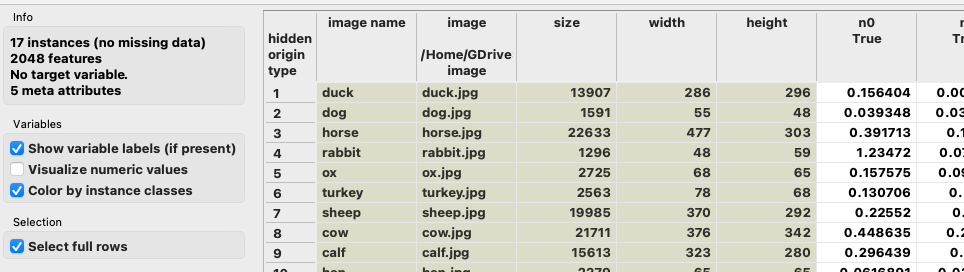
U prethodnom koraku smo dobili novih 2048 stupaca s numeričkim vrijednostima. Na te stupce možemo primijeniti neku od tehnika strojnog učenja, primjerice klasteriranje. Ovdje ćemo koristiti widget Distances za mjerenje udaljenosti.
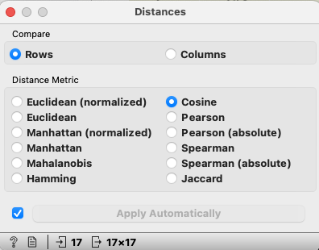
Preporuka za slike je Cosine, ali možete probati i neke druge.
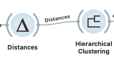
Matricu udaljenosti šaljemo na Hierarchical Clustering kako bi vizualizirali slične parove u obliku dendagrama.
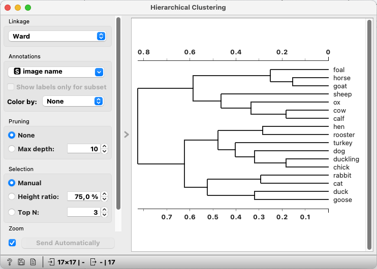
Ako odaberemo neku od grana, možemo vidjeti da su neke od sličnih životinja grupirane zajedno (npr. ox, cow, calf):
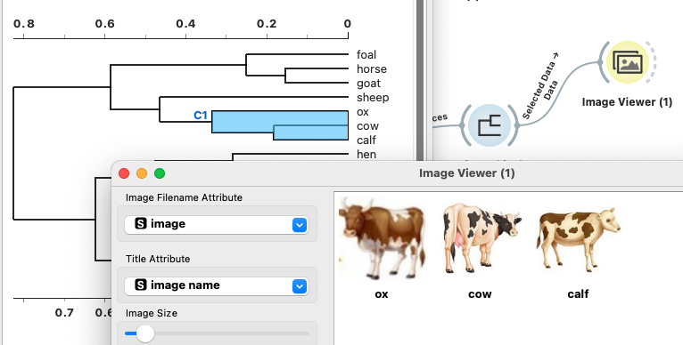
Zbog jako malog skupa podataka neće sve životinje dobro grupirati. No, možemo provjeriti dodavanjem još jedne krave s web-a:
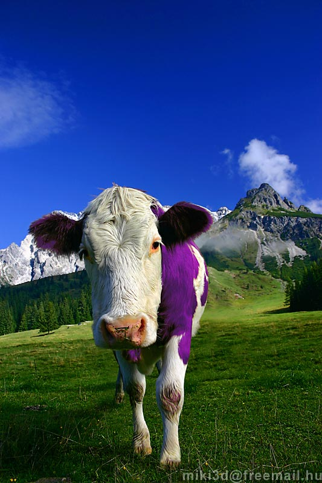
Premda je nova slika prilično drugačija od ostalih (npr. nema niti bijelu pozadinu, dijelom je stvarna, ali ipak obrađena), raspoređena je skupa s ostalima:
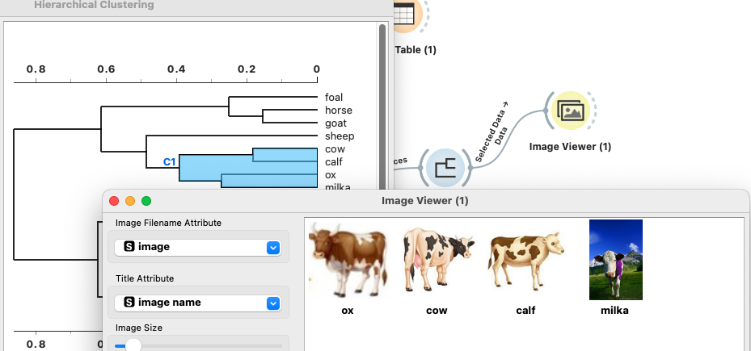
Rješenje
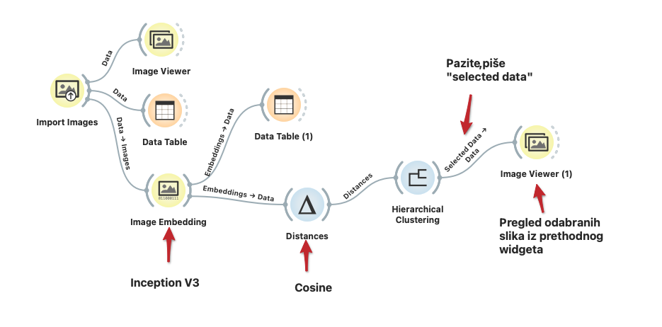
Koristit ćemo model strojnog učenja za predviđanje kojoj vrsti pripada cvijeće. Preuzmite podatke sa stranice kolegija. U tom skupu slika nalazi se jako malo slika (po 10 za svaku kategoriju/vrstu). Svaka vrsta je raspoređena u svoj folder - to je također način kako će Orange "znati" kojoj vrsti pripada svaka slika.
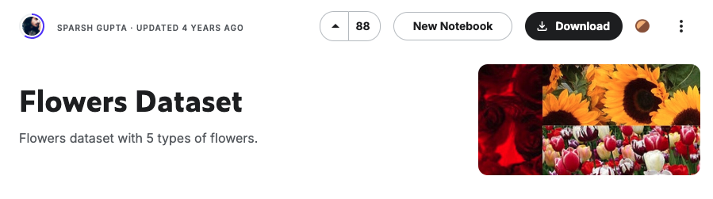
Potrebno je odabrati folder u kojem se nalazi pet podfoldera s nazivima vrste cvijeća (kategorija).
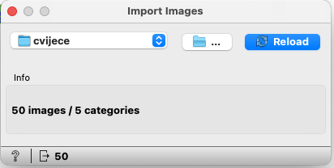
Test and Score
Widget Test and Score testira algoritme učenja (learning algorithms) na podacima.
Ulaz:
- Data - ulazni skup podataka
- Test Data - odvojeni skup podataka za testiranje
- Learner - algoritmi
Izlaz:
- Rezulati evaluacije
Widget sadrži i opcije za odabir uzorka (eng. sample). U tablici koja se prikazuje možemo vidjeti metrike kao što su classification accuracy i area under the curve (AUC). Izlaz se može poslati u matricu konfuzije.
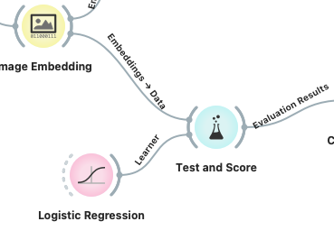
Widget podržava nekoliko načina odabira uzorka:
- Cross-validation - dijeli podatke na nekoliko podskupova (eng. folds), najčešće 5 ili 10. Model se testira tako da se svaki put izostavi jedan fold te se model uvježba na preostalima i testira na onome koji je bio izostavljen.
- Random sampling - dijeli podatke na skup za uvježbavanje u odabranom omjeru.
- Leave one out - slično, samo što izostavlja jednu instancu (sporo).
- Test on train data - koristi cijeli skup za uvježbavanje te zatim za testiranje.
- Test on test data - prethodne metode koriste Data iz podatkovnog kanala, a za upotrebu ove opcije moramo dovesti još jedan poseban kanal Separate Test Data.
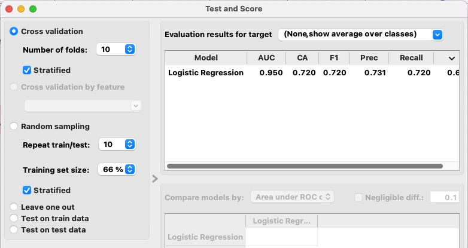
Podaci iz tablice:
- AUC (Area Under Curve) - točnost se mjeri površinom ispod ROC krivulje (receiver-operating curve).
- CA (Classification Accuracy) - omjer točno klasificiranih primjera.
- Prec (Precision) - omjer točnih pozitivnih (true positive) među onima koji su klasificirani kao pozitivni (npr. omjer maslačaka koji su točno indentificirani kao maslačci).
- Recall - omjer točnih pozitivnih među svim pozitivnim podacima (npr. broj bolesnih među svima koji su dijagnosticirani kao bolesni).
- ...
Detaljnije upute i primjere pogledajte na stranici:
Matrica konfuzije
Izlazni kanal iz Test and Score ćemo spojiti na Confusion Matrix kako bi provjerili:
- Stvarne klase
- Klase koje su predviđene
- Koliko ih je točno klasificirano
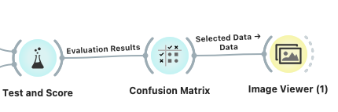
Nadalje, nakon odabira u matrici, možemo provjeriti koji su to konkretni primjerci pogrešno klasificirani (jer smo stavili mali broj slika).
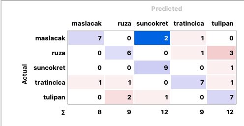
U matrici smo odabrali 2 slučaja gdje je predviđen suncokret, a stvarna vrsta je maslača:
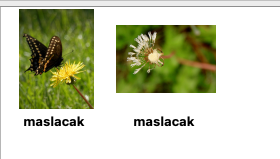
Zašto se to dogodilo?
Rješenje
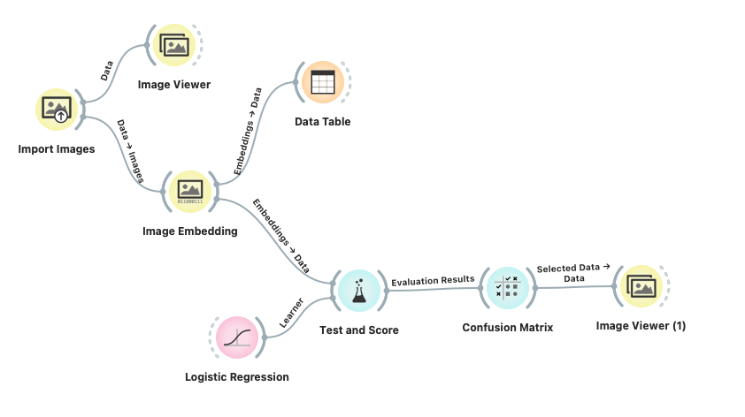
Postupak za klasifikaciju slika cvijeća:
- Pripremiti skup podataka: prikupiti različite slike cvijeća, razdvojiti ih u posebne folder (svaka vrsta u svoj folder).
- Učitati slike: widget Import Images, otvoriti folder s podfolderima.
- Napraviti image embedding pomoću widgeta Image Embedding - odabrati odgovarajući već uvježbani model (kao što je Inception V3).
- Uvježbavanje klasifikacijskog modela: odabrati model (npr. Logistic regression).
- Vizualizacija rezultata: npr. matrica konfuzije, tablica i sl.
- Interaktivna analiza: u matrici konfuzije možemo odabrati slučajeve koji su pogrešno klasificirani kako bi pokušali vidjeti što se dogodilo primjerice pomoću Image Viewer.
Orange nudi mogućnosti analize slika gdje se na prilično jednostavan način mogu obaviti jako složeni zadaci i to bez poznavanja programiranja. Korisnici mogu analizirati i interpretirati podatke.